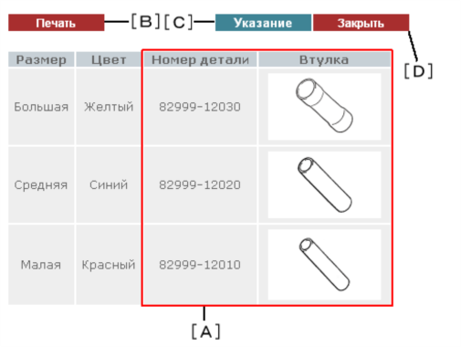

Отображается информация по жгутам проводов для ремонта.
Нажмите на эту ссылку, чтобы перейти к подробным данным по жгутам проводов для ремонта.
УКАЗАНИЕ: Эта ссылка отображается, только если доступны данные по жгутам проводов для ремонта.
Нажмите на эту ссылку, чтобы перейти к подробным данным по пробке отверстия и уплотнению контакта.
УКАЗАНИЕ: Данная ссылка отображается только тогда, когда информация по пробкам отверстий и уплотениям контактов доступна.
Нажмите на эту ссылку, чтобы перейти к подробной информации по цветам втулок.
Выводится вся информация по данному перечню.
Нажмите на эту кнопку, чтобы перейти к разделу "Общая информация о жгутах проводов для ремонта" или "Порядок ремонта контактов и разъемов".
Нажмите на эту кнопку, чтобы закрыть окно.
Отображается вспомогательная информация, связанная со жгутами проводов для ремонта.
На экране используются следующие символы.
А Ширина контакта B Диаметр контакта C Ширина направляющей контакта D Наружный диаметр провода E Номинальный размер провода * Позолоченный
Выводится информация относительно серийного номера разъема.
Нажмите на эту кнопку, чтобы перейти к разделу "Общая информация о жгутах проводов для ремонта" или "Порядок ремонта контактов и разъемов".
Нажмите на эту кнопку, чтобы закрыть окно.
Выводится информация по пробкам отверстий и уплотениям контактов.
Выводится вся информация по данному перечню.
Нажмите на эту кнопку, чтобы перейти к разделу "Общая информация о жгутах проводов для ремонта" или "Порядок ремонта контактов и разъемов".
Нажмите на эту кнопку, чтобы закрыть окно.

Выводится информация по обжимным втулкам.
Выводится вся информация по данному перечню.
Нажмите на эту кнопку, чтобы перейти к разделу "Общая информация о жгутах проводов для ремонта" или "Порядок ремонта контактов и разъемов".
Нажмите на эту кнопку, чтобы закрыть окно.